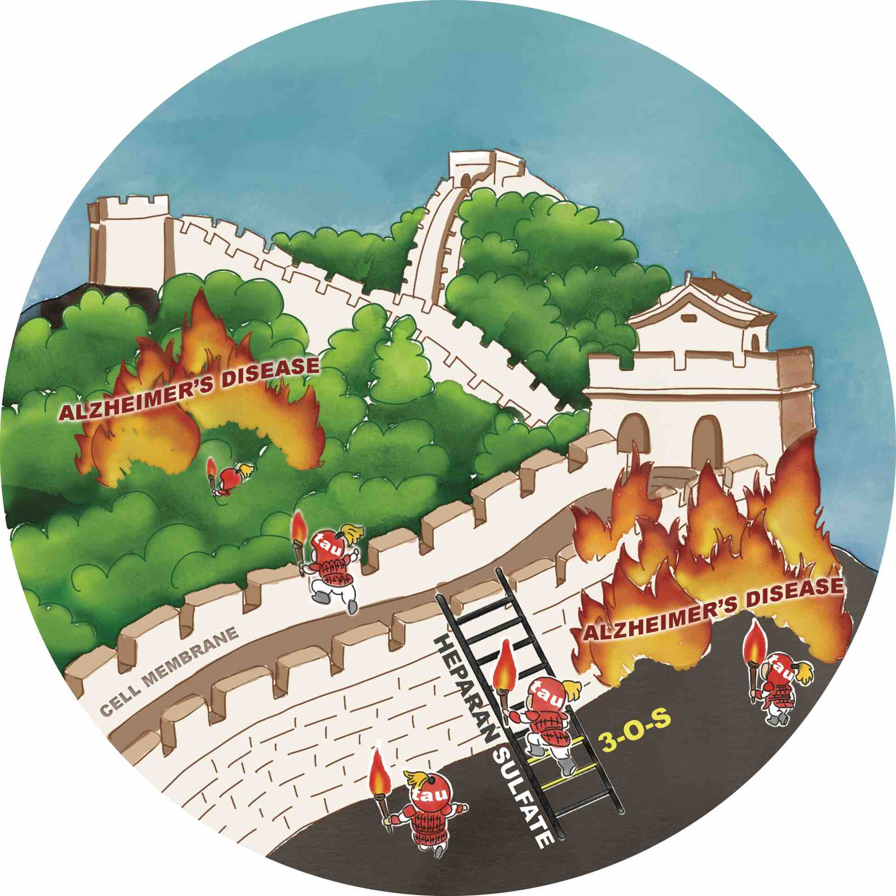

* Dr. Wang's PhD student
$ Postdoctoral researcher in the lab
^ Undergraduate in the lab
Google Scholar Profile: Link
2024
Lauren A Gandy, Fuming Zhang, Ding Xu, Lars C Pedersen, Kay Grobe, Chunyu Wang (2023). Heparan sulfate-binding proteins in health and disease. Frontiers in Molecular Biosciences 1386623 (2024). Link
Jiyuan Yang, Yuefan Song, Weihua Jin, Ke Xia, Grace C Burnett, Wanjin Qiao, John T Bates, Vitor H Pomin, Chunyu Wang, Mingqiang Qiao, Robert J Linhardt, Jonathan S Dordick, Fuming Zhang (2023). Sulfated Glycans Inhibit the Interaction of MERS-CoV Receptor Binding Domain with Heparin. Viruses 237 (2024). Link
2023
James M Gibson, Heying Cui, M Yusuf Ali, Xiaoxin Zhao, Tingyao Wang, David L Moraga, Erik W Debler, Jing Zhao, Kathleen M Trybus, Sozanne R Solmaz, Chunyu Wang (2023). The dynein adapter BicD2 recognizes its cargo through short cargo-recognition alpha-helices. Biophysical Journal 411a (2023). Link
James M Gibson, Xiaoxin Zhao, M Yusuf Ali, Sozanne R Solmaz, Chunyu Wang (2023). A Structural Model for the Core Nup358-BicD2 Interface. Biomolecules 1445 (2023). Link
Dylan Mah, Yanan Zhu, Guowei Su, Jing Zhao, Ashely Canning, James Gibson, Xuehong Song, Eduardo Stancanelli, Yongmei Xu, Fuming Zhang, Robert J Linhardt, Jian Liu, Lianchun Wang, Chunyu Wang (2023). Apolipoprotein E Recognizes Alzheimer's Disease Associated 3‐O Sulfation of Heparan Sulfate. Angewandte Chemie e202212636 (2023). Link
Zhangjie Wang, Vaishali N Patel, Xuehong Song, Yongmei Xu, Andrea M Kaminski, Vivien Uyen Doan, Guowei Su, Yien Liao, Dylan Mah, Fuming Zhang, Vijayakanth Pagadala, Chunyu Wang, Lars C Pedersen, Lianchun Wang, Matthew P Hoffman, Marla Gearing, Jian Liu (2023). Increased 3-O-sulfated heparan sulfate in Alzheimer’s disease brain is associated with genetic risk gene HS3ST1. Science Advances eadf6232 (2023). Link
Weihua Jin, Chenghui Lu, Yanan Zhu, Jing Zhao, Wenjing Zhang, Lianchun Wang, Robert J Linhardt, Chunyu Wang, Fuming Zhang (2023). Fucoidans inhibited tau interaction and cellular uptake. Carbohydrate Polymers 120176 (2023). Link
2022
Shannon Faris, Weihua Jin, James Gibson, Anqesha Murray, Nathan Smith, Peng He, Fuming Zhang, Robert Linhardt, Chunyu Wang (2022). Small-molecule compound from AlphaScreen disrupts tau-glycan interface. Front. Mol. Biosci. 1083225 (2022). Link
Annan Wu, Jie Zhang, Quanhong Li, Xiaojun Liao, Chunyu Wang, Jing Zhao (2022). (-)-Epigallocatechin-3-gallate Directly Binds Cyclophilin D: A Potential Mechanism for Mitochondrial Protection. Molecules 8661 (2022). Link
Yanan Zhu, Lauren Gandy, Fuming Zhang, Jian Liu, Chunyu Wang, Laura J Blair, Robert J Linhardt, Lianchun Wang (2022). Heparan sulfate proteoglycans in tauopathy. Biomolecules 1792 (2022). Link
Anqesha Murray, Lufeng Yan, James M Gibson, Jian Liu, David Eliezer, Guy Lippens, Fuming Zhang, Robert J Linhardt, Jing Zhao, Chunyu Wang (2022). Proline-Rich Region II (PRR2) Plays an Important Role in Tau–Glycan Interaction: An NMR Study. Biomolecules 1573 (2022). Link
Peng He, Shannon Faris, Reddy Sudheer Sagabala, Payel Datta, Zihan Xu, Brian Callahan, Chunyu Wang, Benoit Boivin, Fuming Zhang, Robert J Linhardt (2022). Cholesterol Chip for the Study of Cholesterol–Protein Interactions Using SPR. Biosensors 788 (2022). Link
Angela Eden, Jing Zhao, Yuanyuan Xiao, James Gibson, Chunyu Wang (2022). Covalent fragment inhibits intramembrane proteolysis. Front. Mol. Biosci. 958399 (2022). Link
Adrianne L Gelbach, Fuming Zhang, Seok-Joon Kwon, John T Bates, Andrew P Farmer, Jonathan S Dordick, Chunyu Wang, Robert J Linhardt (2022). Interactions between heparin and SARS-CoV-2 spike glycoprotein RBD from omicron and other variants. Front. Mol. Biosci. 912887 (2022). Link
Wei Zhang, Nabin Kandel, Yiqun Zhou, Nathan Smith, Braulio CLB Ferreira, Miranda Perez, Matteo L Claure, Keenan J Mintz, Chunyu Wang, Roger M Leblanc (2022). Drug delivery of memantine with carbon dots for Alzheimer’s disease: blood–brain barrier penetration and inhibition of tau aggregation. Journal of Colloid and Interface Science 20-31 (2022). Link
Yiqun Zhou, Nabin Kandel, Mattia Bartoli, Leonardo F Serafim, Ahmed E ElMetwally, Sophia M Falkenberg, Xavier E Paredes, Christopher J Nelson, Nathan Smith, Elisa Padovano, Wei Zhang, Keenan J Mintz, Braulio CLB Ferreira, Emel Kirbas Cilingir, Jiuyan Chen, Sujit K Shah, Rajeev Prabhakar, Alberto Tagliaferro, Chunyu Wang, Roger M Leblanc (2022). Structure-activity relationship of carbon nitride dots in inhibiting Tau aggregation. Carbon 1-16 (2022). Link
Yu Zhang, Panhang Liu, Chunyu Wang, Fuming Zhang, Robert J Linhardt, David Eliezer, Quanhong Li, Jing Zhao (2022). Homogalacturonan from squash: Characterization and tau-binding pattern of a sulfated derivative. Carbohydrate Polymers 119250 (2022). Link
Nabin Kandel, Chunyu Wang (2022). Hedgehog Autoprocessing: From Structural Mechanisms to Drug Discovery. Front. Mol. Biosci. 900560 (2022). Link
Jing Zhao, Alan Blayney, Xiaorong Liu, Lauren Gandy, Chao Yang, Xinyue Liu, Yuanyuan Xiao, Michael S. Cosgrove, Sozanne R. Solmaz, Yingkai Zhang, David Ban, Stewart N. Loh, Jianhan Chen and Chunyu Wang (2022). Intrinsically disordered N-terminal domain (NTD) of p53 interacts with mitochondrial PTP regulator Cyclophilin D. J. Mol. Biol. 434 (9): 167552(2022). Link
James Gibson, Heying Cui, M Yusuf Ali, Xiaoxin Zhao, Erik W Debler, Jing Zhao, Kathleen M Trybus, Sozanne R Solmaz, Chunyu Wang (2022). Coil-to-helix transition at the Nup358-BicD2 interface activates BicD2 for dynein recruitment. eLife 11:e74714 (2022). Link
Gretchen T Clark, Yanlei Yu, Cooper A Urban, Guo Fu, Chunyu Wang, Fuming Zhang, Robert J Linhardt, Jennifer M Hurley (2022). Circadian control of heparan sulfate levels times phagocytosis of amyloid beta aggregates. PLoS Genet 18(2):e1009994 (2022). Link
J Joel Janke, Yanlei Yu, Vitor H Pomin, Jing Zhao, Chunyu Wang, Robert J Linhardt, Angel E García (2022). Characterization of heparin’s conformational ensemble by molecular dynamics simulations and nuclear magnetic resonance spectroscopy. J. Chem. Theory Comput. 1894-1904 (2022). Link
Lauren A Gandy, Ashley J Canning, Huan Lou, Ke Xia, Peng He, Guowei Su, Tina Cairns, Jian Liu, Fuming Zhang, Robert J Linhardt, Gary Cohen, Chunyu Wang (2022). Molecular determinants of the interaction between HSV-1 glycoprotein D and heparan sulfate. Front. Mol. Biosci. 1241 (2022). Link
2021
Andrew G Wagner, Robert T Stagnitta, Zihan Xu, John L Pezzullo, Nabin Kandel, José-Luis Giner, Douglas F Covey, Chunyu Wang, Brian P Callahan (2021). Nanomolar, noncovalent antagonism of hedgehog cholesterolysis: exception to the “irreversibility rule” for protein autoprocessing inhibition. biochemistry 61(11): 1022-1028 (2021). Link
Diana A Wall, Seanan P Tarrant, Chunyu Wang, Kenneth V Mills, Christopher W Lennon (2021). Intein Inhibitors as Novel Antimicrobials: Protein Splicing in Human Pathogens, Screening Methods, and Off-Target Considerations. Front. Mol. Biosci. 752824 (2021). Link
Ravit Malishev, Nir Salinas, James Gibson, Angela Bailey Eden, Joel Mieres-Perez, Yasser B Ruiz-Blanco, Orit Malka, Sofiya Kolusheva, Frank-Gerrit Klärner, Thomas Schrader, Elsa Sanchez-Garcia, Chunyu Wang, Meytal Landau, Gal Bitan, Raz Jelinek (2021). Inhibition of Staphylococcus aureus biofilm-forming functional amyloid by molecular tweezers. Cell Chemical Biology 1310-1320. e5 (2021). Link
Jine Li, Guowei Su, Yongmei Xu, Katelyn Arnold, Vijayakanth Pagadala, Chunyu Wang, Jian Liu (2021). Synthesis of 3-O-Sulfated Heparan Sulfate Oligosaccharides Using 3-O-Sulfotransferase Isoform 4. ACS Chemical Biology 2026-2035 (2021). Link
Wei Zhang, Ganesh Sigdel, Keenan J Mintz, Elif S Seven, Yiqun Zhou, Chunyu Wang, Roger M Leblanc (2021). Carbon dots: A future Blood–Brain Barrier penetrating nanomedicine and drug nanocarrier. International Journal of Nanomedicine 5003-5016 (2021). Link
Jennie E Williams, Mario V Jaramillo, Zhong Li, Jing Zhao, Chunyu Wang, Hongmin Li, Kenneth V Mills (2021). An alternative domain-swapped structure of the Pyrococcus horikoshii PolII mini-intein. Scientific Reports 11680 (2021). Link
Haokang Zhang, Jie Fan, Zhen Zhao, Chunyu Wang, Leo Q Wan (2021). Effects of Alzheimer’s Disease-Related Proteins on the Chirality of Brain Endothelial Cells. Cellular and Molecular Bioengineering 231-240 (2021). Link
Dylan Mah, Jing Zhao, Xinyue Liu, Fuming Zhang, Jian Liu, Lianchun Wang, Robert Linhardt, Chunyu Wang (2021). The sulfation code of tauopathies: heparan sulfate proteoglycans in the prion like spread of tau pathology. Front. Mol. Biosci. 671458 (2021). Link
Jing Zhao, Alan Blayney, Xiaorong Liu, Lauren Gandy, Chao Yang, Xinyue Liu, Yuanyuan Xiao, Michael S. Cosgrove, Sozanne R. Solmaz, Yingkai Zhang, David Ban, Stewart N. Loh, Jianhan Chen and Chunyu Wang (2021). EGCG Binds Intrinsically Disordered N-terminal Domain of p53 and Disrupts p53-MDM2 Interaction. Nature Communications 12: 986 (2021). Link
Xiaoxio Zhang, Xinyue Liu, Guowei Su, Miaomiao Li, Chunyu Wang (co-corresponding author) and Ding Xu (2021). pH-Dependent and Dynamic Interactions of Cystatin C with Heparan Sulfate. Communications Biology. (2021)4:198. Link
2020
Jin, W., He, X., Wu, W., Bao, Y., Wang, S., Cai, M., Zhang, W., Wang, C., Zhang, F., Linhardt, R.J. and Mao, G., (2020). Structural analysis of a glucoglucuronan derived from laminarin and the mechanisms of its anti-lung cancer activity. International Journal of Biological Macromolecules. Link
Tasissa, R. Lai, and C. Wang. (2020) Homology Initialization for Protein Structure Determination via Distance Geometry. bioRxiv, Link
Susan E. Coombs Sudeep Banjade, Ksenia Kriksunov, Nicolina Clemente, Jing Zhao, Chunyu Wang, Richard E. Gillilan, and Robert E. Oswald. Coombs SE, Banjade S, Kriksunov K, Clemente N, Zhao J, Wang C, Gillilan RE, Oswald RE (2020). In Vitro Effects of (+)MK-801 (dizocilpine) and Memantine on β-Amyloid Peptides Linked to Alzheimer's Disease. Biochemistry. 2020 Dec 8;59(48):4517-4522. Link
Kathryn M. Colelli, Jennifer M. Pusztay, Jing Zhao, Jian Xie, Chunyu Wang and Kenneth V. Mills (2020). Allosteric Influence of Extremophile Hairpin Motif Mutations on the Protein Splicing Activity of a Hyperthermophilic Intein Biochemistry (2020) Link
Jin, Weihua, Di Jiang, Wenjing Zhang, Chunyu Wang, Ke Xia, Fuming Zhang, and Robert J. Linhardt. "Interactions of fibroblast growth factors with sulfated galactofucan from Saccharina japonica." International Journal of Biological Macromolecules (2020) Link
Xinyue Liu, Yingkai Zhang, Scott Forth, Iban Ubarretxena-Belandia, Raquel Lieberman and Chunyu Wang (2020). Substrate enzyme interaction in intramembrane proteolysis. Frontiers in Molecular Neuroscience, 13: 65 Link
Jing Zhao, Zhenming Du, Chunyu Wang, Kenneth V. Mills (2020). Methods to study the structure and catalytic activity of cis-splicing inteins. In: Vila-Perelló M. (eds) Expressed Protein Ligation. Methods in Molecular Biology, vol 2133. Humana, New York, NY. Link
Carl J. Smith, Robert Stagnitta, Andrew G. Wagner, Chunyu Wang, Brian P. Callahan (2020). Diverting hedgehog protein autoprocessing with chemical activators of non-native catalysis. Biochemistry. 59 (6), 736-741. Link
Jackie Jing Zhao, Yuanyuan Xiao, Xinyue Liu, Marilia Barros, Yueming Li, Xuben Hou, Feng Xiong, Nikolaos Robakis, Jon Dordick, Yingkai Zhang, Iban Ubarretxena-Belandia and Chunyu Wang (2020). Substrate interaction inhibits intramembrane proteolysis and amyloid production. Chemical Communications. DOI: 10.1039/C9CC09170J Link
2019
Jing Zhao, Daniel A. Ciulla, Jian Xie, Andrew G. Wagner, Drew A. Castillo, Allison S. Zwarycz, Zhongqian Lin, Seth Beadle, José-Luis Giner, Zhong Li, Hongmin Li, Nilesh Banavali, Brian P. Callahan, Chunyu Wang (2019). General Base Swap Preserves Activity and Expands Substrate Tolerance in Hedgehog Autoprocessing. J. Am. Chem. Soc. Published online. DOI: 10.1021/jacs.9b08914 Link
Jing Zhao, Yanan Zhu, Xuehong Song, Yuanyuan Xiao, Guowei Su, Xinyue Liu, Zhangjie Wang, Yongmei Xu, Jian Liu, David Eliezer, Trudy F. Ramlall, Guy Lippens, James Gibson, Fuming Zhang, Robert J. Linhardt, Lianchun Wang, Chunyu Wang (2019). Rare 3‐O‐sulfation of Heparan Sulfate Enhances Tau Interaction and Cellular Uptake. Angew Chem. Int. Ed. Published online. DOI: 10.1002/anie.201913029 Link 
Xiaoyu Zhang, Zihan Xu, Dina S. Moumin, Daniel A. Ciulla, Timothy S. Owen, Rebecca A. Mancusi, José-Luis Giner, Chunyu Wang, Brian P. Callahan (2019). Protein-Nucleic Acid Conjugation with Sterol Linkers Using Hedgehog Autoprocessing. Bioconjugate Chemistry. Published online. DOI: 10.1021/acs.bioconjchem.9b00550 Link
Clément Despres, Jing Di, François-Xavier Cantrelle, Zizheng Li, Isabelle Huvent, Béatrice Chambraud, Jing Zhao, Jianle Chen, Shiguo Chen, Guy Lippens, Fuming Zhang, Robert Linhardt, Chunyu Wang, Frank-Gerrit Klärner, Thomas Schrader, Isabelle Landrieu, Gal Bitan, Caroline Smet-Nocca (2019). Heparin-induced tau does not represent accurately the self-assembly and seeding of hyperphosphorylated tau and their modulation by potential inhibitors. ACS Chemical Biology. Published online. DOI: 10.1021/acschembio.9b00325 Link
Daniel Ciulla, Andrew Wagner, Liu Xinyue, Courtney Cooper, Michael Jorgensen, Chunyu Wang, Puja Goyal, Nilesh Banavali, Jose’ GinerC, Brian Callahan (2019). Sterol A-ring plasticity in hedgehog protein cholesterolysis supports a primitive substrate selectivity mechanism. Chemical Communications, 55:1829-1832. DOI: 10.1039/C8CC09729A. Link
Adam Schaffner, Xianting Li, Nina Pan, Keita Morohashi, Emmanouela Leandrou, Anna Memou, Hardy Rideout, Yacob Gomez-Llorente, Lianteng Zhi, Hui Zhang, Chen Yao, Shu G. Chen, Farinaz Afsari, Christopher J. Elliott, Nicolina Clemente, Chunyu Wang, Ming-Ming Zhou, Iban Ubarretxena-Belandia, and Zhenyu Yue. Vitamin B12 inhibits LRRK2 kinase activity and prevents deficits in LRRK2 models of PD pathogenesis. Cell Research, 29 (4): 313 DOI: 10.1038/s41422-019-0153-8. Link
2018
Nicolina Clemente, Alaa Abidine, Iban Ubarretxena-Belandia and Chunyu Wang (2018). Coupled Transmembrane Substrate Docking and Helical Unwinding in Intramembrane Proteolysis of Amyloid Precursor Protein. Scientific Reports, 8:12411. DOI:10.1038/s41598-018-30015-6 Link
David J. Rosenman, Nicolina Clemente, Muhammod Ali, Angel Garcia and Chunyu Wang (2018). High Pressure NMR Reveals Conformational Perturbations Disease-Causing Mutations in Amyloid β-Peptide. Chemical Communications, 54: 4609-4612. DOI: 10.1039/C8CC01674G. Link
2017
Christian K. Ramsoomair, Anthony E. Yakely, Laura M. Urbanski, Kevin Karanja, Zachary T. Giaccone, Nicolle M. Siegart, Julie N. Reitter, Chunyu Wang and Kenneth V. Mills (2017). Coordination of the third step of protein splicing in two cyanobacterial inteins. FEBS Letters. 591: 2147-2154. Link
Allison Zwarycz, Martin Fossat, Otar Akanyeti, Zhongqian Lin, Catherine Royer, Kenneth Mills and Chunyu Wang (2017). Structural basis of a stabilizing mutation in Mtu RecA intein revealed by high pressure NMR. Biochemistry 56: 2715-2722. DOI: 10.1021/acs.biochem.6b01264. Link
Christopher J. Minteer, Nicolle M. Siegart, Kathryn M. Colelli, Xinyue Liu, Robert J. Linhardt, Chunyu Wang, Alvin V. Gomez, Julie N. Reitter, Kenneth V. Mills (2017). Intein-promoted cyclization of aspartic acid flanking the intein leads to atypical N-terminal cleavage. Biochemistry 56: 1042-1050. Link
Jackie Zhao, David Eliezer, Guy Lippens, Pete Tessier, Robert Linhardt, Fuming Zhang and Chunyu Wang (2017). Glycan determinants of heparin/tau interaction. Biophyscial Journal 112: 921-932. Link
2016
Jian Xie*, Timothy Owen, Ke Xia, Brian Callahan and Chunyu Wang (2016). A Single Aspartate Coordinates Two Catalytic Steps in Hedgehog Autoprocessing. Journal of the American Chemical Society. 138: 10806-10809. DOI: 10.1021/jacs.6b06928 Link
David J Rosenman*, Chunyu Wang, Angel E. Garcia, (2016). Characterization of Aβ Monomers Through the Convergence of Ensemble Properties Among Simulations with Multiple Force Fields. Journal of Physical Chemistry B. 120(2): 259-277. Link
2015
Lopes DH, Attar A, Nair G, Hayden EY, Du Z$, McDaniel K, Dutt S, Bandmann H, Bravo-Rodriguez K, Mittal S., Klarner, F.-G., Wang, C., Sanchez-Garcia, E., Schrader, T. and Bitan, G. (2015). Molecular tweezers inhibit islet amyloid polypeptide assembly and toxicity by a new mechanism. ACS chemical biology. 10(6): 1555-1569. Link
Xie, J.*, Owen, T., Xia, K., Singh, A. V., Tou, E.^, Li, L., Arduini, B., Li, H., Wan, L. Q., Callahan, B., and Wang, C. (2015). Zinc Inhibits Hedgehog Autoprocessing: Linking Zinc Deficiency with Hedgehog Activation. J. Biol. Chem. 290(18): 11591-11600. Top 5 most viewed article March-April 2015 on JBC website. Link
2014
Owen, T. S., Xie, J.*, Laraway, B., Ngoje, G., Wang, C., & Callahan, B. P. (2014). “Active Site Targeting of Hedgehog Precursor Protein with Phenylarsine Oxide”. ChemBioChem 16(1):55-58. Link
K. R. Valasani, E. A. Carlson, K. P. Battaile, A. Bisson*, C. Wang, S. Lovell and S. S. Yan (2014). “High-resolution crystal structures of two crystal forms of human cyclophilin D in complex with PEG 400 molecules” Acta Cryst. F70, 717-722. Link
Wen Chen*, Eric Gamache, David Rosenman*, Jian Xie*, Maria Lopez, Yueming Li, and Chunyu Wang (2014). “Familial Alzheimer's Mutations within APPTM Increase Abeta42 Production by Enhancing the Accessibility of the Epsilon-Cleavage Site”. Nature Communications 4:3037 DOI: 10.1038/ncomms4037. Link
2013
Nicastri, Michael C., Kristina Xega, Lingyun Li, Jian Xie*, Chunyu Wang, Robert J. Linhardt, Julie N. Reitter, and Kenneth V. Mills (2013). "Internal Disulfide Bond Acts as a Switch for Intein Activity." Biochemistry 52(34): 5920-5927. Link
Jian Xie*, Zhenming Du$, Brian Callahan, Marlene Belfort and Chunyu Wang (2013). “1H, 13C and 15N NMR assignments of a Drosophila Hedgehog autoprocessing domain”. Biomolecular NMR assignments 1-3. Link
David Rosenman*, Christopher Connors*, Wen Chen*, Chunyu Wang, Angel E. Garcia, (2013). “Monomers Transiently Sample Oligomer and Fibril-like Configurations: Ensemble Characterization Using a Combined MD/NMR Approach” Journal of Molecular Biology 425(18): 3338-3359. Link
Connors, Christopher Ryan*, David Jacob Rosenman*, Dahabada HJ Lopes, Shivina Mittal, Gal Bitan, Mirco Sorci, Georges Belfort, Angel E. Garcia, and Chunyu Wang (2013). "Tranilast Binds to Aβ Monomers and Promotes Aβ Fibrillation." Biochemistry 52(23): 3995-4002. Link
2012
Yuchuan Zheng, Qin Wu, Chunyu Wang, Min-qun Xu, Yangzhong Liu (2012). “Mutual Synergistic Protein Folding in the Ssp DnaE Split Intein”. BioScience Reports 32:433-442. Link
Sharmistha Sinha, Zhenming Du$, Panchanan Maiti, Frank-Gerrit Klärner, Thomas Schrader, Chunyu Wang, Gal Bitan (2012) “Comparison of three amyloid assembly inhibitors – the sugar scyllo-inositol, the polyphenol epigallocatechin gallate, and the molecular tweezer CLR01”. ACS Chemical Neuroscience 3: 451-458. Link
Wen Chen*, Lingyun Li, Zhenming Du$, Jiajing Liu*, Julie N. Reitter, Kenneth V. Mills, Robert J. Linhardt, and Chunyu Wang (2012). “Intramolecular Disulfide Bond between Catalytic Cysteines in an Intein Precursor” Journal of the American Chemical Society. 134(5):2500-2503. Link
Chen, W.*, Gamache, E., Richardson, D., Du, Z.$ and Wang, C. (2012) “Expression, purification, and reconstitution of the transmembrane domain of the human amyloid precursor protein for NMR studies” Protein Expression and Purification 81: 11-17. Link
2011
Huiyuan Li, Zhenming Du*, Dahabada H. J. Lopes, Erica Fradinger, Chunyu Wang and Gal Bitan (2011). “C-terminal Tetrapeptide Inhibitors of Aβ42-induced Neurotoxicity Bind Preferentially at the N-terminus of Aβ42”, Journal of Medicinal Chemistry, 54(24): 8451-8460. Link
Zhenming Du$, Jiajing Liu*, Clayton D. Albracht*, Alice Hsu^, Wen Chen*, Michelle D. Marieni, Kathryn M. Colelli, Jennie E. Williams, Julie N. Reitter, Kenneth V. Mills, Chunyu Wang (2011). “Structural and Mutational Studies of a Hyperthermophilic Intein from DNA Polymerase II of Pyrococcus abyssi”, Journal of Biological Chemistry, 286: 38638-38648. With a cover illustration of Nov. 4, 2011 issue of JBC. Link
Sinha, Sharmistha; Lopes, Dahabada; Du, Zhenming; $ Pang, Eric; Shanmugam, Akila; Lomakin, Aleksey; Talbiersky, Peter; Tennstaedt, Annette; McDaniel, Kirsten; Bakshi, Reena; Kuo, Pei-Yi; Ehrmann, Michael; Benedek, George; Loo, Joseph; Klärner, Frank-Gerrit; Schrader, Thomas; Wang, Chunyu; Bitan, Gal (2011) “Lysine-specific molecular tweezers are broad-spectrum inhibitors of assembly and toxicity of amyloid proteins”, Journal of the American Chemical Society 133(42): 16958-16969. Link
Du, Z.$, Zheng, Y., Patterson, M.*, Liu, Y.$ and Wang, C. (2011) “pKa Coupling at Intein Active Site: Implications for Coordination Mechanism of Protein Splicing with a Conserved Aspartate”, Journal of the American Chemical Society 133:10275-10282. Link
Jiajing Liu*, Zhenming Du$, Roshni Naidu^, Clay Albracht*, Kenneth V. Mills and Chunyu Wang (2011). “1H, 13C, and 15N NMR assignments of intein from DNA polymerase II of Pyrococcus abyssi”. Biomolecular Assignment 5: 233-235. Link
Sgourakis, N.G., Merced-Serrano, M., Boutsidis, C., Drineas, P., Du, Z.$, Wang, C. and Garcia, A.E. (2011) “Atomic-level characterization of the ensemble of the Aβ(1-42) monomer in water using unbiased Molecular Dynamics simulations and spectral algorithms”. Journal of Molecular Biology 405: 570-583. Link
2010
Du, Z.$, Liu, Y.$, Ban, D.^, Lopez, M., Belfort, M. and Wang, C. (2010). “Backbone Dynamics and Global Effects of an Activity Enhancing Mutation in Minimized Mtu RecA Inteins”, Journal of Molecular Biology 400: 755-767. Link
2009
Hiraga K., Soga, I., Dansereau, J.T., Pereira, B., Derbyshire, V., Du, Z.$, Wang, C., Van Roey, P., Belfort, G., Belfort, M. (2009). “Selection and Structure of Hyperactive Inteins: Peripheral Changes Relayed to the Catalytic Center”, Journal of Molecular Biology 393: 1106-1117. Link
Du, Z.$, Shemella, P.T., Liu, Y., McCallum, S.A., Pereira, B., Nayak, S.K., Belfort, G., Belfort, M. and Wang, C. (2009). “Highly Conserved Histidine Plays a Dual Catalytic Role in Protein Splicing: a pKa Shift Mechanism”, Journal of the American Chemical Society 131: 11581-11589. Link
Zhang, L., Zheng, Y., Xi, Z., Luo, Z., Xu, X., Wang, C., and Liu, Y. (2009) “Metal Ions Binding to RecA Inteins from Mycobacterium tuberculosis”, Molecular BioSystems 5: 644-650. Link
Gribenko, A.V., Patel, M.M., Liu, J.*, McCallum, S.A., Wang, C., Makhatadze, G.I. (2009). “Rational Stabilization of Enzymes by Computational Redesign of Surface Charge-Charge Interactions”, Proceedings of the National Academy of Science 106: 2601-2606. Link
2008
Du, H., Guo, L., Fang, F., Chen, D., Sosunov, A., McKhann, G., Yan, Y.*, Wang, C., Zhang, H., Molkentin, J.D., Gunn-Moore, F.J., Vonsattel, J.P., Arancio, O., Chen, J.X., Yan, S.D. (2008). “Deficiency of Cyclophilin D Attenuates Mitochondrial and Neuronal Perturbation, and Ameliorates Learning Memory in Alzheimer’s Disease”, Nature Genetics 14: 1097-1105. Link
Du, Z.$, Liu, Y.$, McCallum, S., Dansereau, J., Derbyshire, V., Belfort, M., Belfort, G., Van Roey, P., Wang, C. (2008). “1H, 13C, and 15N NMR assignments of an engineered intein based on Mycobacterium tuberculosis RecA”, Biomolecular NMR Assignments 2: 111-113. Link
Yan, Y.*, McCallum, S.A., Wang, C. (2008). “M35 oxidation Causes Aβ40-like Changes in Structure and Dynamics in Aβ42”, Journal of the American Chemical Society 130: 5394-5395. Link
Shinde, A.V., Bystroff, C., Wang C., Vogelezang, M.G., Vincent, P.A., Hynes, R.O., Van DeWater, L. (2008) “Identification of the Peptide Sequences within the EIIIA (ED-A) Segment of Fibronectin that Mediate Integrin α9β1-Dependent Cellular Activities”, Journal of Biological Chemistry 283:2858-7280. Link
2007
Yan, Y.*, Liu, J.*, McCallum, S.A., Yang, D. and Wang, C. (2007) “Methyl Dynamics of the Amyloid-β peptides Aβ40 and Aβ42”, Biochemical Biophysical Research Communications 362:410-414. Link
Yin, Y.I., Bassit, B., Zhu, L., Yang, X., Wang, C. and Li, Y.-M. (2007) “γ-Secretase Substrate Concentration Modulates Aβ42/Aβ40 Ratio: Implications for Alzheimer’s Disease”, Journal of Biological Chemistry 282:23639-23644. Link
Yan, Y.* and Wang, C. (2007) “Aβ40 Protects Non-Toxic Aβ42 Monomers from Aggregation”, Journal of Molecular Biology 369:909-916. Link
Sgourakis, N., Yan, Y.*, McCallum, S., Wang, C. and Garcia, A.E. (2007) “The Alzheimer's Peptides Aβ40 and 42 Adopt Distinct Conformations in Water: A Combined MD/NMR Study”, Journal of Molecular Biology 368:1448-1457. Link
Yan, Y.*, Liu, Y.$, Sorci, M., Belfort, G., Lustbader, J.W., Yan, S.D. and Wang, C. (2007) “Surface Plasmon Resonance and Nuclear Magnetic Resonance Studies of ABAD-Aβ Interaction”, Biochemistry 46: 1724-1731. Link
2006
Yan, Y.* and Wang, C. (2006) “Aβ42 is More Rigid than Aβ40 in the C-Terminus: Implications for Aβ Aggregation and Toxicity”, Journal of Molecular Biology 364: 853-862. Link
Before RPI
Massi, F., Wang, C., Palmer, A.G. (2006). “Solution NMR and computer simulation studies of active site loop motion in triosephosphate isomerase”, Biochemistry 45: 10787-10794.
Wang, C., Karpowich, N.K., Hunt, J.F., Rance, M., Palmer, A.G. (2004) “Dynamics of ATP-Binding Cassette Contributes to Nucleotide Binding and Energy Transduction”, Journal of Molecular Biology 342: 525-537.
Grey, M.J., Wang, C., Palmer, A.G. (2003). “Disulfide Bond Isomerization in Basic Pancreatic Trypsin Inhibitor: Multi-site Chemical Exchange Quantified by CPMG Relaxation Dispersion and Chemical Shift Modeling”, Journal of the American Chemical Society 125: 14324-14335.
Wang, C., Rance, M., Palmer, A.G. (2003). “Mapping Chemical Exchange in Proteins with MW > 50 kD”, Journal of the American Chemical Society 125: 8968-8969. Selected as a “Must Read” by faculty of 1000 website (www.facultyof1000.com).
Wang, C., Hunt, J.F., Rance, M., Palmer, A.G. (2002). “1H, 15N and 13C Backbone Assignment of MJ1267, an ATP-binding Cassette”, Journal of Biomolecular NMR 24: 167-168.
Wang, C., Palmer, A.G. (2002). “Differential Multiple Quantum Relaxation Caused by Chemical Exchange outside Fast Exchange Limit”, Journal of Biomolecular NMR 24: 263-268.
Wang, C., Grey, M.J., Palmer, A.G. (2001). “New CPMG Sequences with Enhanced Sensitivity to Chemical Exchange”, Journal of Biomolecular NMR 21: 361-366.
Pawley, N., Wang, C., Koide, S., Nicholson, L.K. (2001). “An Improved Method for Distinguishing Anisotropic Tumbling and Chemical Exchange in Analysis of 15N Relaxation Parameters”, Journal of Biomolecular NMR 20: 149-165.
Wang, C., Pawley, N., Nicholson, L. (2001). “The Role of Backbone Motions in Ligand Binding to the c-Src SH3 Domain”, Journal of Molecular Biology 313: 873-887.
Wang, C., Xi, J., Begley, T. P., Nicholson, L.K. (2001), “Solution Structure of This and Implications for the Evolutionary Roots of Ubiquitin”, Nature Structural Biology 8: 47-51. Selected as Editor’s Choice in Jan. 19, 2001 issue of Science.
Cordier, F., Wang, C., Grzesiek, S., Nicholson, L.K. (2000), “Ligand-Induced Strain in Hydrogen Bonds of the c-Src SH3 Domain Detected by NMR”, Journal of Molecular Biology 304: 497-505. With an accompanying cover illustration and highlighted on the Academic Press website.